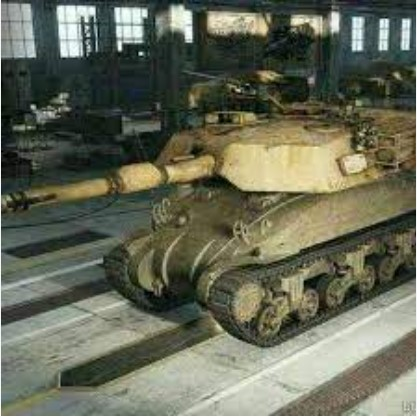

興趣愛好 — 作為宅男，我平時的活動就是看軍事武器相關的影片、玩遊戲跟聽音樂。 —
企業號航母是我心目中的經典之作，其卓越的戰功深深吸引著我。參與過20餘場大小戰役，擊沉擊傷敵艦共計300多艘，擊落敵機900多架，這樣的紀錄展現了其在海戰中的無與倫比的實力。這艘航母不僅是美國海軍的驕傲，也是二戰歷史的一部分，深深植根於我對歷史的熱愛。
另外，我還喜歡追蹤一些有趣的武器梗，比如雪曼M1。這是某部電視劇中提到的一種虛構坦克，其名稱的組合方式讓人聯想到M4謝爾曼坦克和M1艾布拉姆斯坦克。這個梗的荒誕描述讓我感受到武器領域的幽默和創意。有時候，這些輕鬆愉快的武器梗也能讓我在繁忙的生活中找到些許樂趣。
在我的生活中，音樂一直是我靈魂的一部分，而Linkin Park成為我熱愛的樂隊之一。Linkin Park以其深沉的歌詞、獨特的音樂風格和強烈的表演聞名，成為我音樂世界中不可或缺的一部分。 樂隊的音樂風格融合了搖滾、嘻哈和電子元素，而他們的歌曲 "Numb" 更是我心中的經典之一。這首歌的旋律總是能深深觸動我的心靈，歌詞中對於生活、自我價值和情感的探索，正是我在日常生活中所思考的事情。 "Numb" 是一首充滿情感的歌曲，歌詞中的每一句都彷彿在講述我的心情。這首歌通過其深情而強烈的旋律，伴隨著Chester Bennington的獨特嗓音，讓我沉浸在一種共鳴和情感表達的氛圍中。 每次聆聽Linkin Park的音樂，特別是 "Numb" 這首歌，都讓我感受到一種獨特的力量和情感的解放。樂隊的音樂不僅成為我生活中的陪伴，更是在我情緒低落或迷茫時，給予我鼓勵和支持的力量。